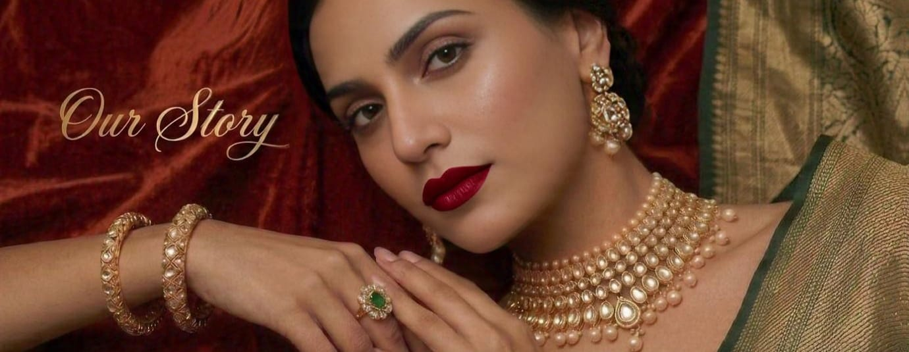
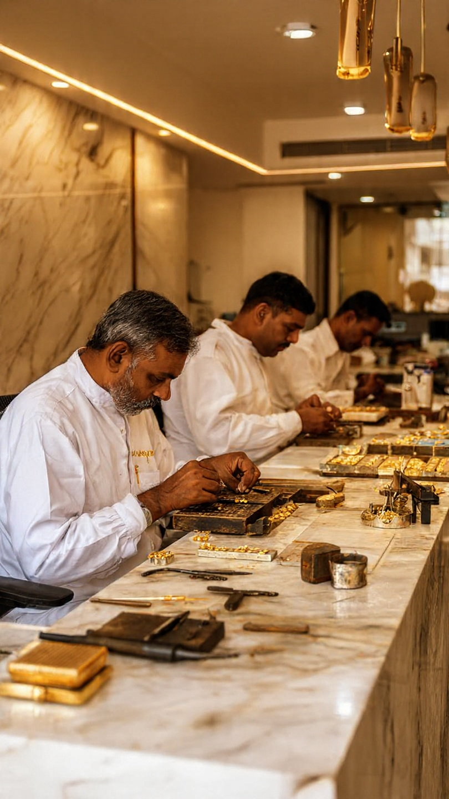

Auraaya’s Story
Auraaya was founded in 2026 by Jay Singh Gauravat, a designer who grew up watching his grandmother care for traditional Indian jewellery — each piece a story of a dynasty, temple motif, and ancient pattern.
Noticing heritage pieces were often too heavy or "too much" for modern life, and "trendy" jewellery looked cheap, lacked soul and investment value, Auraaya was born.
The brand deconstructs heavy Indian designs, Minakari (enamelling) and Kundan (gemstone setting) techniques into sleek, minimalist 18K gold-plated vermeil pieces.
"Wearable History" — perfect for a London boardroom or Indian wedding. Beyond its captivating aesthetic allure, each piece serves as a curated investment for the years to come.
"Jewellery is a story told in gold and stone. By following these steps, you ensure your chapter of the story remains as vibrant as the day it was founded."
- Avoid Chemicals: Put your jewellery on only after you have applied perfume, hairspray, and lotion. These products contain chemicals that can dull the gold and damage the delicate enamel work.
- Keep it Dry: Always remove your pieces before swimming, showering, or intense workouts. Moisture and chlorine are the enemies of fine finishes.
- Smart Storage: Store each piece individually in its Auraaya pouch. This prevents scratches and keeps minimalist lines sharp.
- Gentle Buffing: Use a soft, lint-free cloth after each wear to remove skin oils. Avoid chemical cleaners, which can strip the gold and damage delicate enamel.
- Handle with Care: Avoid dropping your jewellery on hard surfaces, as the impact can dislodge hand-set gemstones or chip the enamel work.
- Soft Polish: After each wear, gently wipe your piece with a soft, lint-free microfiber cloth to remove skin oils.
Our Mission
Auraaya was founded to honor the sacred thread that connects our past to our present. Our mission is to celebrate heritage and empower self-expression by creating ethically sourced, artisanal fine jewellery that refuses to compromise. By deconstructing the opulence of Indian craft history—once reserved for dynasties—into sleek, 18K gold-plated silhouettes, we provide modern women with pieces that possess both a soul and a story. We believe in jewellery that is as durable as it is beautiful, blending ancient techniques with the demands of a contemporary lifestyle.
Our Vision
We envision a world where luxury is no longer an occasional indulgence, but a daily standard. Auraaya reimagines the intricate artistry of the past for the pace of the modern world, making heritage accessible without losing its essence. Our vision is to transform traditional Indian craftsmanship into "Wearable History"—ensuring that every ring, necklace, and earring is versatile enough for a London boardroom yet steeped in the grandeur of an Indian wedding. We create for the woman who values investment over trends, and timelessness over the temporary.
The Artisans

The heart of Auraaya beats within the workshops of our master artisans. These guardians of the craft have spent generations perfecting Minakari, the delicate art of enamelling, and Kundan, the ancient precision of gemstone setting. Our commitment to these artisans goes beyond design; it is a pledge to ethical sourcing, fair practices, and the preservation of a cultural legacy that was nearly lost to mass production.